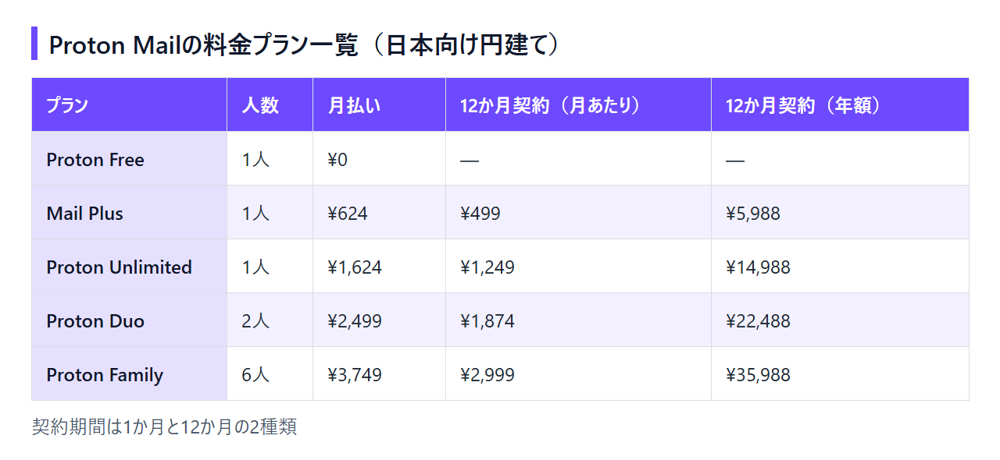

Proton Mailは無料でどこまで使える？料金プラン・有料版の違い・支払い方法
Proton Mailに登録してみたものの、無料のままで困らないのか、有料にするならどのプランなのかで手が止まっていないでしょうか。料金ページには個人向け・家族向け・法人向けのプランが並び、契約期間によって月額も変わるため、全体像をつかむまでに時間がかかります。
Proton Mailの無料プラン「Proton Free」は月額¥0で使えます。ただし、メール容量や独自ドメイン、フォルダーの数、送信数には上限があります。この記事では、無料で使える範囲と制限、有料プランの円建て料金、日本からの支払い方法、解約と返金の条件を順に整理します。当編集部はProtonと契約していないため、使用感ではなく公式に案内されている料金と条件をもとにまとめています。
無料プランと有料プランの機能が同じページで見比べられるので、自分に必要な機能がどのプランから使えるかを先に確かめておけます。
結論：無料のままでよい人、Mail Plus・Unlimitedに上げる人
Proton Mailは、無料プランのままでもメールの送受信ができます。 メール容量が最大1GBでは足りない、独自ドメインを使いたい、既存のメールソフトからBridgeで使いたい、のどれかに当てはまればMail Plusが候補です。VPNやDriveの大容量まで含めてProtonのサービスをまとめたいならProton Unlimited、社員の分もまとめて契約するなら法人向けのMail Essentialが候補に入ります。
Proton Freeのままで足りる人
個人の連絡用にアドレスを1つ持ちたいだけなら、たいていはProton Freeで足ります。
- 使うアドレスは1件で、独自ドメインは要らない
- 保存しておくメールが1GBに収まる
- フォルダー3つ・フィルター1つで振り分けが足りる
- ブラウザかスマートフォンのアプリでメールを読めればよい
Mail Plusに上げたほうがよい人
メールの使い方そのものが無料枠を超える人は、Mail Plusが最初の選択肢になります。
- 過去のメールを残しておきたく、1GBでは容量が足りない
- 仕事用に独自ドメインのアドレスを使いたい
- 用途ごとにアドレスを分け、最大10件まで持ちたい
- パソコンのメールソフト（IMAP/SMTP対応）からBridge経由で使いたい
- 1日に150通を超えて送ることがある
Proton Unlimited・Duo・Familyを選ぶ人
メール以外のProtonサービスも使う人や、2人以上で契約する人は、Mail Plus以外のプランと比べることになります。
- メールとパスワード管理に加えて、VPNや500GBのストレージも使いたい（Proton Unlimited）
- パートナーと2人で使いたい（Proton Duo）
- 家族6人までまとめて契約したい（Proton Family）
Proton Mailの料金プラン一覧（日本向けの円建て価格）
日本から料金ページを開くと円で表示され、契約期間は1か月と12か月の2種類から選べます。 12か月契約のほうが、月あたりの金額は安くなります。

個人向け：Proton Free・Mail Plus・Proton Unlimited
1人で使う場合のプランは3つです。
- Proton Free：¥0
- Mail Plus：月払い¥624／12か月契約は¥499/月（年額¥5,988）
- Proton Unlimited：月払い¥1,624／12か月契約は¥1,249/月（年額¥14,988）
料金ページ上の正式な表記は「Proton Mail」で、「protonmail」とつなげて書かれることもあります。
2人・家族向け：Proton Duo・Proton Family
2人以上で使う場合は、人数とストレージ容量が決まったプランを選びます。
- Proton Duo（2人・2TB）：月払い¥2,499／12か月契約は¥1,874/月（年額¥22,488）
- Proton Family（6人・3TB）：月払い¥3,749／12か月契約は¥2,999/月（年額¥35,988）
Duoを12か月契約にすると、1人あたりの月額は¥937になります。2人がそれぞれProton Unlimitedを12か月契約する場合（1人¥1,249/月）より安く済みます。ただし、使うのがメールだけなら、Mail Plusを2人分契約するほうが年額¥11,976で済み、Duoより¥10,512安くなります。
Familyは6人で使い切ると、1人あたり約¥500/月（12か月契約）です。Mail Plus 1人分の¥499/月とほぼ同じ金額になります。
法人向け：Mail Essential・Workspaceプラン
法人向けプランはUSD表示で、1ユーザーあたりの価格です。別途税金がかかる場合があります。どのプランにも14日間の無料トライアルが付いています。
- Mail Essential：月払い$7.99／12か月契約は$6.99/月
- Workspace Standard：月払い$14.99／12か月契約は$12.99/月
- Workspace Premium：月払い$24.99／12か月契約は$19.99/月
1ドル=157円換算（執筆時点の目安。為替で変動）で、12か月契約の1ユーザー月あたりは、Mail Essentialが約1,097円、Workspace Standardが約2,039円、Workspace Premiumが約3,138円です。
一人法人で、独自ドメインのアドレスを自分1人で使うだけなら、12か月契約で¥499/月のMail Plusが最も安く済みます。社員の分もまとめて契約する、あるいは独自ドメインを2つ以上使うなら、独自ドメインを3つまで設定できるMail Essentialが候補です。法人向けは14日間試せるので、社内で使い勝手を確かめてから申し込めます。
月払いと12か月契約の違い
月払いは毎月更新され、12か月契約は1年分をまとめて支払います。Mail Plusの場合、月払いを12か月続けると¥7,488で、12か月契約の年額¥5,988より¥1,500高くなります。
12か月契約も、初回購入から30日以内なら返金を申請できます。30日のうちに続けるかどうかを決められるなら、12か月契約で始めて、合わなければ返金を申請する方法もあります。30日では判断しきれない場合や、1人1回の返金申請を使わずにおきたい場合は、月払いから始めてください。
契約期間を切り替えると表示価格が変わるので、1か月と12か月の両方の金額を見てから申し込めます。
無料プラン（Proton Free）でできること・制限
Proton Freeは月額¥0で、メールアドレス1件と最大1GBのメール容量を使えます。 一方で独自ドメインは使えず、フォルダーやフィルターの数にも上限があり、送信は1日150通までです。
無料で使える範囲
無料プラン（Proton Free）に含まれるのは、次の範囲です。
- メールアドレス：1件
- メールストレージ：初期500MB（条件を満たすと1GB）
- カレンダー：3つ
- ドライブ：最大5GB
容量を500MBから1GBに増やす条件
登録直後のメール容量は500MBです。アカウントを作ってから18日以内に「開始チェックリスト」を完了すると、容量が1GBに増えます。期限を過ぎると条件を満たせないので、登録したら早めに済ませておきましょう。
無料で困りやすい制限
使い始めてから気づく制限は、次の5つです。
- フォルダー3つ・ラベル3つ・フィルター1つまで
- 独自ドメインは使えない
- Bridge（既存のメールソフトから使う仕組み）は有料のMailプラン限定
- 送信は1日150通まで
- デスクトップアプリは14日間の無料トライアルのみ
今のメールをフォルダーとフィルターで細かく振り分けている人は、無料のまま移るとこの上限にすぐ届きます。
無料プランで独自ドメインは使える？
Proton Freeでは独自ドメインを使えません。
独自ドメインを使えるのはMail Plus以上で、Mail Plusは1ドメイン、Proton Unlimited・Duo・Familyは3ドメインまで設定できます。
有料プランで増えること：Mail PlusとProton Unlimitedの違い
Mail Plusはメール機能を広げるプラン、Proton Unlimitedはメールに加えてほかのProtonサービスの有料版をまとめたプランです。 メールだけならMail Plusで足ります。Unlimitedが割安になるのは、VPNやDriveの大容量も使う場合です。
Mail Plusで増えること
無料プランから上げると、次の点が変わります。
- ストレージが15GBになる
- アドレスが最大10件に増える
- 独自ドメインを1つ使える
- Bridgeを使って手元のメールソフトから送受信できる
- 1日150通の送信上限がなくなる
ストレージはMail Plusが15GB、Proton Unlimitedが500GBで、どちらもメールとProton Driveで共有します。メール専用の容量ではない点に注意してください。
Proton Unlimitedで増えること
Proton Unlimitedでは、アドレスが15件、独自ドメインが3つまでに増えます。メールに加えて、Proton VPN・Drive・Calendar・Passの有料版もまとめて使えます。Proton Passの料金ページにもUnlimitedが上位プランとして並んでいます。
パスワード管理だけが目的なら、Proton Pass単体の有料プラン「Pass Plus」（12か月契約で¥4,488）もあります。
12か月契約で比べると、Mail Plus（年額¥5,988）とPass Plus（年額¥4,488）を別々に契約しても合計は年額¥10,476です。Unlimited（年額¥14,988）より¥4,512安くなります。メールとパスワード管理だけならこの組み合わせで足り、Unlimitedを選ぶのはVPNや500GBのストレージも使う場合です。
2人以上ならProton Duo・Proton Family
DuoとFamilyは、アドレス数とストレージが人数に合わせて大きくなります。
- Proton Duo：2人・2TB・アドレス30件・独自ドメイン3つ
- Proton Family：6人・3TB・アドレス90件・独自ドメイン3つ
日本からの支払い方法・請求書・消費税
円で払う場合は、クレジットカード、PayPal、Apple Pay、Google Payが使えます。 請求書はPDFで、アカウント画面からダウンロードできます。
円で払える支払い方法
日本向けの円建て価格で契約するときの支払い方法は、次の4つです。
- クレジットカード
- PayPal
- Apple Pay（macOSのSafari、またはiPhone・iPadから）
- Google Pay
現金・銀行振込・Bitcoinで払う場合の注意
円以外の支払い方法もありますが、条件が異なります。
- Bitcoin：無料アカウントを作った後で選べる
- 現金：USD・EUR・CHFで対応、返金は不可
- 銀行振込：CHF・USD・EURで対応、返金は不可
現金と銀行振込は円に対応しておらず、30日返金の対象からも外れます。
請求書PDFと消費税の扱い
請求書は、デスクトップのアカウント画面からPDFでダウンロードできます。同じ画面で請求先の情報を設定しておけば、以降の請求書に反映されます。
事業の経費にする場合、海外サービスの消費税やインボイス（適格請求書）の扱いは契約内容によって変わるため、税理士に確認してください。
他のメールサービスと料金を比べる
Proton Mailには無料プランがあり、有料のMail Plusも12か月契約なら年額¥5,988です。 常設の無料プランがないFastmailと比べると、無料のまま使い続けられる点が大きく違います。
Fastmailとの料金の違い
Fastmailも、プライバシーを重視する有料メールです。料金の組み立ては次のように異なります。
- 無料プラン：Fastmailは常設の無料プランがなく、カード登録不要の無料トライアルが最長30日
- 1人向けの料金：FastmailのIndividualは¥930/月、年払い¥9,300（税込表示）
- 独自ドメイン：FastmailはIndividual以上で使えるが、法人向けの最安プランBasicでは使えない
FastmailのIndividualには60GBのストレージが付きます。容量はMail Plusの15GB（Driveと共有）の4倍です。保存するメールが多く容量を重視するならFastmail、独自ドメインを1つ安く使いたいなら年額の低いMail Plus、という分け方になります。
Fastmailは、試用期間が終わるまでに支払わないと送受信が止まる点に注意してください。
Gmailなど無料メールと比べるときの考え方
Gmailから乗り換える場合、ProtonのEasy Switchを使うと、Gmailのメール・連絡先・カレンダーを取り込めます。ただし、無料プランのメール容量は最大1GBなので、Gmailの過去メールをまとめて移すとすぐに上限に届きます。過去メールも移すつもりなら、15GB（Driveと共有）のMail Plusを前提に料金を考えておくと、移行の途中で容量不足に慌てずに済みます。
解約・ダウングレード・返金の条件
有料プランは管理画面から解約でき、無料プランに戻しても請求期間の終わりまでは有料機能を使えます。 公式サイトやアプリから直接契約した場合は、初回購入から30日以内なら返金を申請できます。
無料プランへのダウングレード
解約と無料プランへのダウングレードは、どちらも管理画面から手続きします。手続きをしても、支払い済みの請求期間が終わるまでは有料プランの機能をそのまま使えます。
ダウングレードの前には、容量などを無料プランの条件に収める必要があります。Mail Plus（15GB）などから戻すとき、無料プランの上限である1GBを超えたままだと、容量を空けるか再びアップグレードするまで、新しいメールを送受信できなくなります。1GBを超える分のメールは、先に整理しておきましょう。
30日返金の条件
料金ページには、全プラン共通で30日間の返金保証が表示されています。返金を受けるには、次の条件を満たす必要があります。
- Protonの公式サイトか公式アプリで、Protonと直接契約している
- 初回購入から30日以内に解約し、返金を申請する
- 返金の申請は1人1回まで
- 現金・銀行振込で支払った分は対象外
アプリストア経由で契約した場合
App StoreやGoogle Playなど、Proton以外の事業者を通して契約した場合は、その事業者の返金規定に従い、Protonの30日返金の条件は当てはまりません。
公式サイトから直接申し込めば、12か月契約でも初回購入から30日以内は返金を申請できます。月払いとの年¥1,500の差も、料金ページで見比べられます。
よくある質問
料金まわりで迷いやすい点を補足します。
Proton Mailは本当に無料で使い続けられる？
Proton Freeは¥0のプランで、有料にしなくても送受信はできます。有料に切り替えるかどうかは、メール容量・フォルダー数・独自ドメイン・送信数の制限に当たるかで判断してください。
無料トライアルはある？
個人向けの有料プランには、料金ページから誰でも申し込める無料トライアルはありません。Mail Plusの2週間の無料トライアルは、既存ユーザーの紹介リンクから登録した場合に限られます。その代わり、公式から直接契約すれば、初回購入から30日以内に1回だけ返金を申請できます。
法人向けプランには、それぞれ14日間の無料トライアルがあります。なお、Proton Freeでデスクトップアプリを14日間試せるのは無料プランの機能制限で、有料プランのお試しではありません。
月払いと12か月契約はどちらを選ぶべき？
30日以内に続けるかどうかを決められるなら、12か月契約で始めて、合わなければ返金を申請する方法があります。Mail Plusなら月払いより年¥1,500安く済みます。30日では判断できない場合や、1人1回の返金申請を残しておきたい場合は、月払いを選んでください。
Proton VPNやProton Passだけ使いたい場合は？
パスワード管理だけなら、前述のPass Plusが候補です。Proton VPNの単体料金はこの記事では扱いません。
まとめ：まず無料で始め、足りない機能が出たらMail Plusから検討する
Proton Freeで使い方を確かめ、容量・独自ドメイン・Bridgeのどれかが必要になったらMail Plusを検討します。VPNや500GBのストレージまで使うなら、Unlimitedと比べます。この順番なら、使わない機能にお金を払わずに済みます。
- 無料の範囲：アドレス1件、容量は最大1GB、フォルダー3つ・フィルター1つ、送信は1日150通まで
- Mail Plusに上げる目安：容量（15GB、Driveと共有）、独自ドメイン、Bridge、送信数のどれかが必要になったとき（12か月契約で年額¥5,988）
- Unlimitedの目安：メール・パスワード管理に加えてVPNや500GBのストレージも使うとき
- Duo・Family・Mail Essentialの目安：2人以上、または社員の分もまとめて契約するとき
- 日本からの支払い：円ならカード、PayPal、Apple Pay、Google Pay
- 返金：公式から直接契約し、初回購入から30日以内に申請
無料アカウントの作成も、有料プランの比較も、同じ公式サイトから進められます。